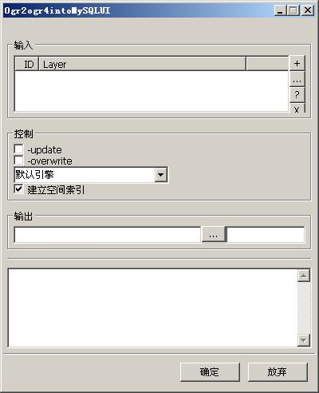

ogr2mysql是一个导入ogr矢量数据集到MySQL的工具。直接使用gdal提供的ogr2ogr实用程序。仅仅算是提供了一个GUI工具。
实用类：geosings.tools.Ogr2ogr.Ogr2ogr4intoMySQL
UI控制面板类：geosings.tools.ui.Ogr2ogr4intoMySQLUI.Ogr2ogr4intoMySQLUI
运行主界面如下：

主界面分为四个部分。一个是图层输入面板，一个是控制参数面板，一个是图层输出面板。一个是过程输出显示面板。
图层输入面板和图层输出面板的介绍可以看链接文档。最主要的核心在于控制面板。
控制面板中的几个参数都是依据ogr2ogr参数精简出来的。
| -update | 是否更新图层 该参数指定更新已存在的图层（如果指定输出图层在MySQL数据库中已存在的话）。 默认为否 |
| -overwrite | 是否覆盖图层 该参数指定覆盖已存在的图层（如果指定输出图层在MySQL数据库中已存在的话）。 默认为否 |
| engine | 指定使用的MySQL引擎。 在导入的时候，MySQL对建立空间索引所使用的引擎有所挑剔。比如在MySQL4的情况下，一定只能用MyISAM引擎才可以在输入数据的同时建立空间 索引。按我的经验，在MySQL5的某些版本中也挑引擎，而有些版本却没有这个问题。所以还是需要添加一下指定引擎的参数。 默认使用MySQL默认的引擎。您在需要的时候可以指定MyISAM引擎或者自己写引擎的名称。 |
| build spatial index | 指定是否建立空间索引。 该参数指定是否建立空间索引。（当然是推荐建立啦，没有空间索引，对于大数据量来说是很痛苦的。） 默认也是建立的。 |
| geosings, Ogr2Mysql | 返回主目 录 |